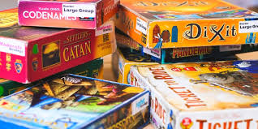

Board games
Board games are traditionally a subset of tabletop games that involve counters or pieces moved or placed on a pre-marked surface or "board", according to a set of rules. In common parlance, however, a board game need not necessarily contain a physical board, and may instead refer to a wide variety games, such as card games which don't utilize a standard deck. Some games are based on pure strategy, but many contain an element of chance; and some are purely chance, with no element of skill.
Most popular games:
| Name | Popularity score |
|---|---|
| Scrabble | 95% |
| Monopoly | 91.25% |
| Catan | 91.25% |
| Qwirkle | 90% |
| Risk | 87.5% |
Games usually have a goal that a player aims to achieve. Early board games represented a battle between two armies, and most modern board games are still based on defeating opponents in terms of counters, winning position, or accrual of points. There are many varieties of board games. Their representation of real-life situations can range from having no inherent theme, such as checkers, to having a specific theme and narrative, such as Cluedo. Rules can range from the very simple, such as in Snakes and Ladders; to deeply complex, as in Advanced Squad Leader. The time required to learn to play or master a game varies greatly from game to game, but is not necessarily correlated with the number or complexity of rules; games like chess or Go possess relatively simple rulesets, but have great strategic depth.
Tutorial on an interesting game :)
Research into gaming
Research studies show that board games such as Snakes and Ladders result in children showing significant improvements in aspects of basic number skills such as counting, recognizing numbers, numerical estimation and number comprehension. They also practice fine motor skills each time they grasp a game piece. Playing board games has also been tied to improving children's executive functions and help reducing risks of dementia for the elderly. Related to this is a growing academic interest in the topic of game accessibility, culminating in the development of guidelines for assessing the accessibility of modern tabletop games and the extent to which they are playable for people with disabilities.
Popular games worldwide
- Europe
- Ticket to Ride
- Catan (formerly Settlers of Catan)
- Carcassonne
- United States
- Connect4
- Guess who
- Codenames
- Asia
- Mahjong
- Sugoroku
- Yut Nori